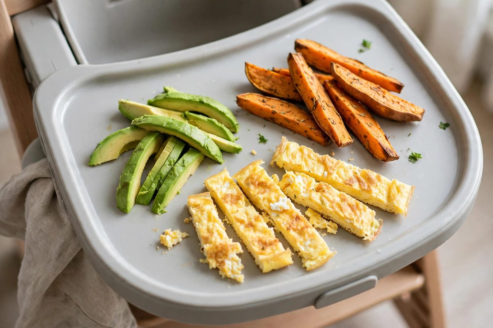

Home » Guides
Baby-Led Weaning

Baby-led weaning means skipping purees and letting your baby feed themselves pieces of soft food from the very start of solids, usually at around six months. Instead of spoon-feeding, parents offer finger-sized pieces of family foods and let the baby decide what to eat and how much. Many families enjoy this approach because the baby joins family meals from day one and learns to handle real textures early. It is not the right choice for every family, and it is fine to combine it with spoon-feeding. This guide explains how it works, how to start safely, and how to decide if it suits you.
How baby-led weaning works
In baby-led weaning, the baby sits at the table with the family and is offered soft, graspable pieces of food: steamed vegetable sticks, strips of meat, toast fingers, pieces of omelette, and soft fruit. The baby picks food up, brings it to their mouth, and chews or gums it. Nothing is spooned in, and the baby controls the pace and the amount. Milk remains the main nutrition for the first year, so there is no pressure for the baby to eat a set amount. The approach builds hand-eye coordination, chewing skills, and confidence with different textures from the beginning.
Getting started safely
Wait until your baby is around six months old and can sit up with support, hold their head steady, and bring food to their mouth. Offer food only when your baby is upright in a highchair and always stay with them while they eat. Cut food into finger-length strips that stick out of a small fist, and make sure everything is soft enough to squash between your fingers. Avoid choking hazards like whole grapes, whole nuts, hard raw vegetables, and round foods. Learn infant first aid and the difference between gagging, which is normal and noisy, and choking, which is silent and needs help.
What a day looks like
Start with one meal a day, often breakfast or lunch when your baby is alert. Offer a few pieces of what the family is eating, adapted for the baby: for example, strips of omelette with steamed broccoli, or toast fingers with mashed avocado and banana. Over weeks, build up to two and then three meals a day. Early on, most of the food ends up on the floor or in the hair, and that is expected. Intake is small at first and grows as your baby's skills improve. Keep offering iron-rich foods such as meat strips, lentils, and eggs, since iron needs rise after six months.
Spoon-feeding, weaning, or a mix
Many families use a mix of baby-led weaning and spoon-feeding, and that is perfectly fine. Purees are useful on days when your baby is tired or unwell, and for foods like yoghurt or porridge that are hard to pick up. There is no evidence that one method produces healthier eaters than the other, so choose the approach that fits your family, your baby's temperament, and your comfort level. If baby-led weaning feels stressful, try a mix and see how it goes. The goal is a relaxed, happy baby who enjoys food, not a perfect method.
A typical baby-led weaning week
A typical week of baby-led weaning is simpler than many parents expect. Breakfast might be toast fingers with banana on Monday, porridge fingers on Tuesday, and scrambled egg strips on Wednesday. Lunch could be steamed vegetable sticks with hummus, pasta pieces with tomato sauce, or a small sandwich. Dinner is usually a portion of the family meal, adapted for the baby, such as strips of chicken with roasted vegetables or lentil stew with bread. Keep a few spare outfits and a washable mat under the highchair, because the first weeks are messy, and remember that milk still provides most of the nutrition.
Frequently Asked Questions
When can I start baby-led weaning?
At around six months, once your baby can sit up with support, hold their head steady, and bring food to their mouth. Do not start earlier.
Will my baby get enough iron without purees?
They can, if you offer iron-rich finger foods such as strips of meat, lentils, beans, and egg. Pair them with vitamin C foods like peppers or fruit to help iron absorption.
Is gagging normal in baby-led weaning?
Yes, gagging is common in the early weeks and is part of learning. It is noisy and the baby recovers on their own. Choking is silent and rare, but learn first aid so you are prepared.
Important: every baby is different. Always follow your pediatrician's advice on when to start solids, which foods to offer, and how to introduce allergens. The guidance on this site is general information, not medical advice.